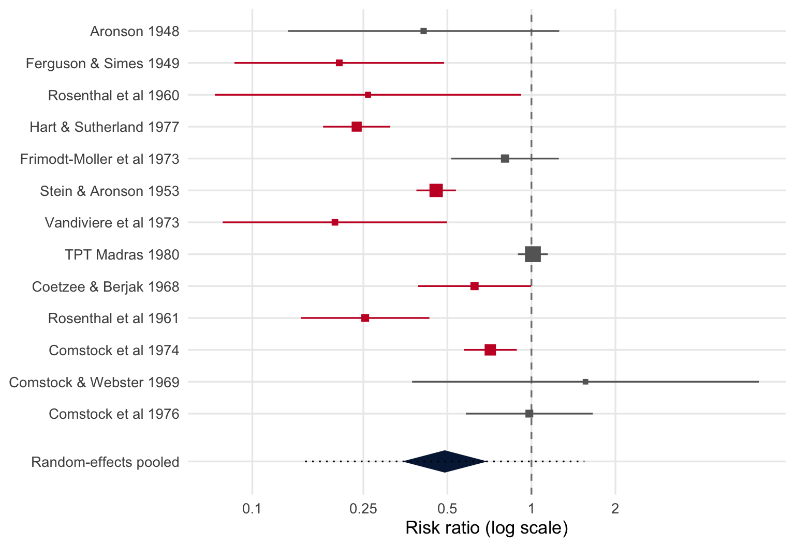
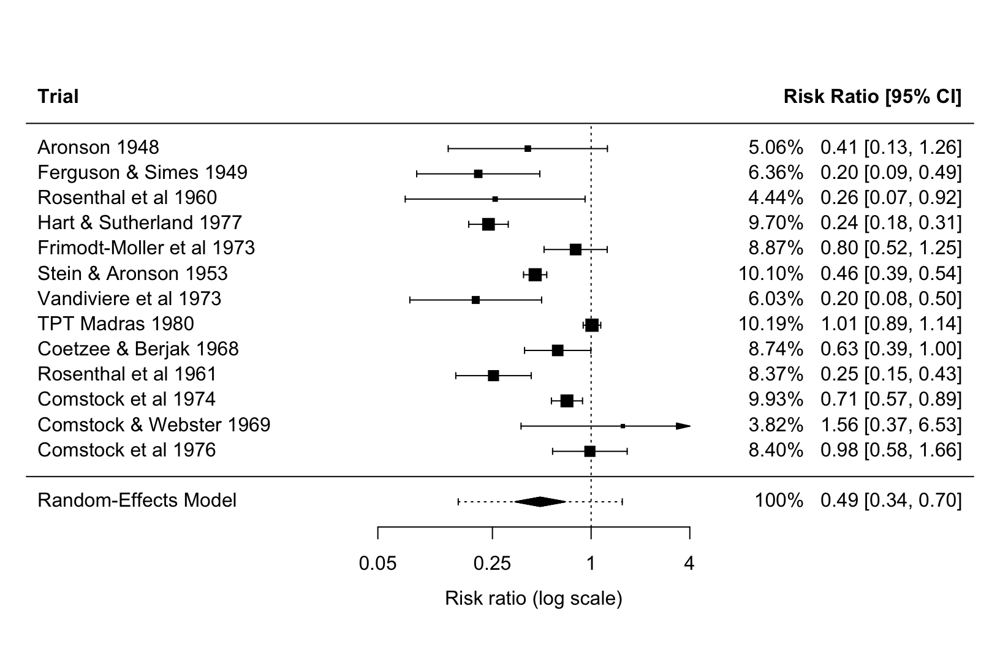
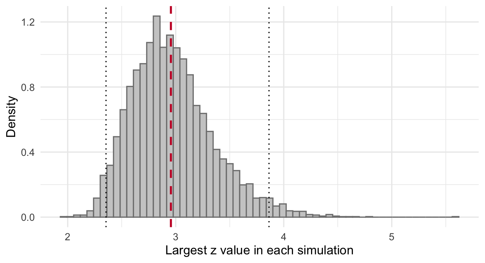
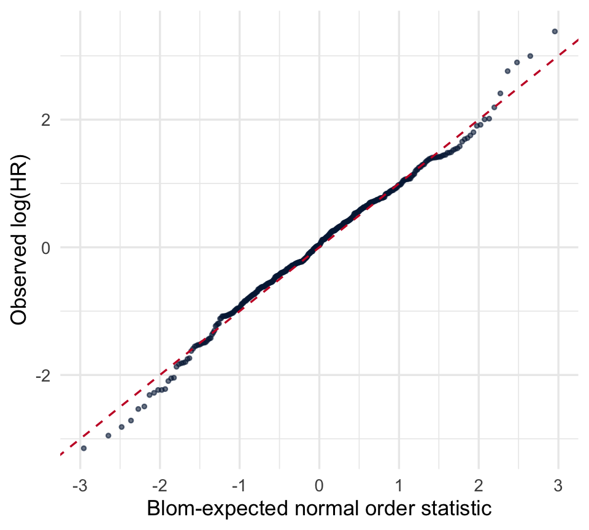
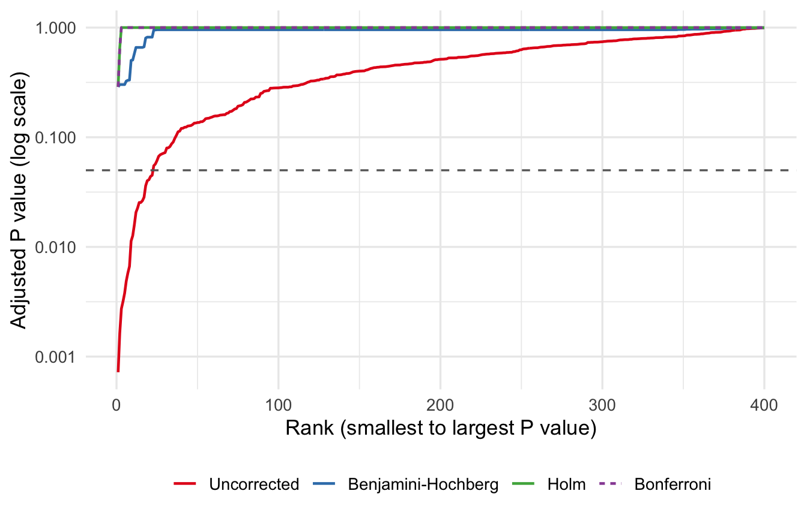
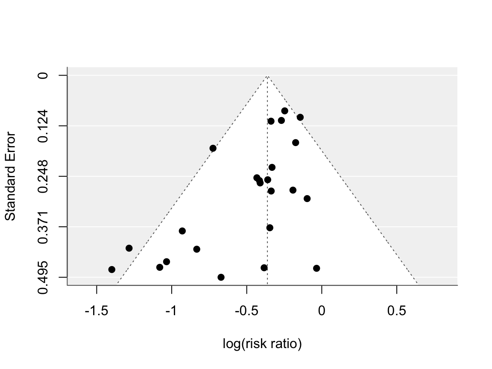
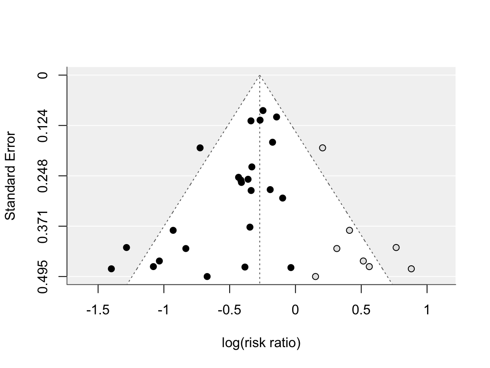
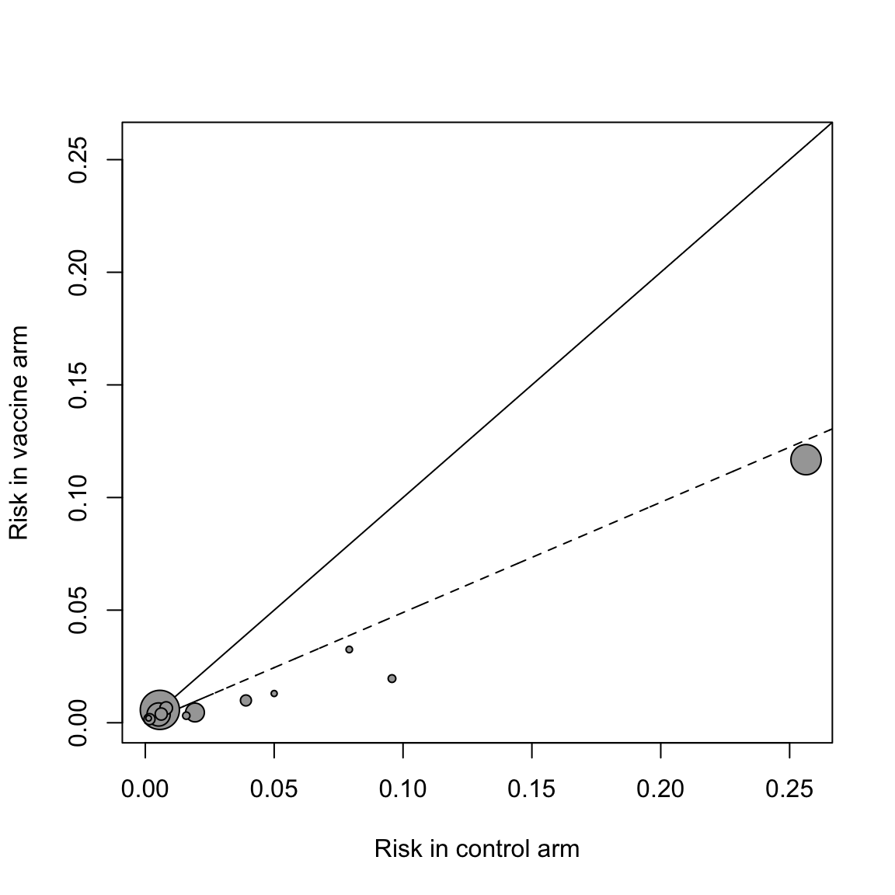
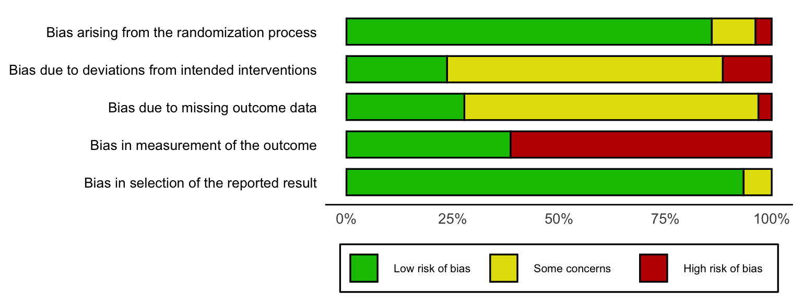

explain why visualisation is a methodological step, done before modelling as well as after;
build forest plots with ggplot2, metafor and meta, and choose between them;
explain why large apparent effects are expected when many comparisons are made, and quantify the expected extremes under the null with Blom’s formula and simulation;
apply and interpret Bonferroni, Holm and Benjamini–Hochberg corrections;
construct and interpret funnel plots, contour-enhanced funnel plots and trim-and-fill, and list the causes of funnel asymmetry other than publication bias;
use L’Abbé, Galbraith and risk-of-bias plots, and recognise when a table is the better display.
R packages:dplyr, tidyr, ggplot2, metafor, meta, robvis, medicaldata.
A meta-analysis is usually summarised by a single figure, the forest plot, and many readers look at nothing else. That makes visualisation a methodological step in its own right. A good figure shows the reader what the data can and cannot support; a poor one, or a misleading one, can persuade them of something the data do not show. This chapter starts with a figure of the second kind.
4.1 A pattern-recognition test
Figure 4.1 shows the association between a prenatal exposure to chemical X and eight neurodevelopmental outcomes in young children, each estimated as a log hazard ratio with its 95% confidence interval. The idea for the exercise comes from (1).
Code
n <-400# number of comparisons madese <-1# standard error of each log(HR)yi_all <-rnorm(n, mean =0, sd = se) # true log(HR) = 0 for every comparison# Show 8: the most extreme positive, the most extreme negative, and 6 others at randomidx_pos <-which.max(yi_all)idx_neg <-which.min(yi_all)idx_6 <-sample(setdiff(seq_len(n), c(idx_pos, idx_neg)), 6)idx_pick <-c(idx_6[1:3], idx_pos, idx_neg, idx_6[4:6])outcomes <-c("ADHD", "ASD composite", "Asperger syndrome", "Atypical autism","Autistic disorder", "Developmental delay", "Language disorder","Other PDD")df <-tibble(outcome = outcomes,yi = yi_all[idx_pick],ci_lo = yi -1.96* se,ci_hi = yi +1.96* se,outcome_f =factor(outcome, levels =rev(outcomes)))
Figure 4.1: Association between exposure to chemical X and eight neurodevelopmental outcomes.
Before reading on, write down your answers
Is the exposure associated with the outcomes?
Which outcome has the strongest association?
How would you summarise the pattern?
Would you conclude that the exposure is harmful?
We return to this figure in Section 4.4. The code above already shows how it was made, so you may have guessed. Most readers who see only the figure do not.
4.2 Why visualisation is a methodological step
Before analysis, plots help you understand the evidence base: tables of study characteristics reveal clinical heterogeneity before any statistical test; scatter plots of effects against study characteristics suggest moderators; dot plots of the raw estimates show outliers and the shape of their distribution; plotting effects against publication year shows temporal trends; and risk-of-bias displays show patterns that affect interpretation. You should look at the data before fitting a single model.
After analysis, each standard plot encodes different information and has different blind spots. Forest plots communicate the individual and pooled estimates and the heterogeneity between them. Funnel plots examine small-study effects, including possible publication bias. Galbraith plots identify studies that contribute disproportionately to heterogeneity. L’Abbé plots show whether the effect depends on baseline risk. Summary-of-findings tables communicate certainty (Chapter 5). Knowing what each plot cannot show is as important as knowing what it can.
Good figures help readers understand concepts and data, emphasise the message, build trust and inform decisions. Poor figures do the opposite, and readers rightly discount the authors’ other work when a figure is careless or misleading.
4.3 Building forest plots
Three R tools draw forest plots: ggplot2, which gives complete control; metafor, the most comprehensive meta-analysis package; and meta, which has the most accessible syntax for clinicians. Figure 4.1 was drawn with ggplot2. To compare the three on a real meta-analysis we use a classic data set, distributed with metafor: 13 trials of BCG vaccine against tuberculosis (2).
Code
bcg <-escalc(measure ="RR",ai = tpos, bi = tneg, ci = cpos, di = cneg,data = dat.bcg,slab =paste(author, year))# Fitting from the raw counts (rather than yi and vi) keeps the arm-level# data in the model object, which labbe() needs laterres_bcg <-rma(measure ="RR", ai = tpos, bi = tneg, ci = cpos, di = cneg,data = dat.bcg, slab =paste(author, year), method ="REML")
4.3.1ggplot2
ggplot2 needs more code, but every element can be changed. The pooled diamond must be drawn as a polygon from the model’s estimate and confidence limits. Here studies whose confidence interval excludes 1 are highlighted, and the dotted line below the diamond shows the 95% prediction interval, the range in which the effect in a new study is expected to lie (Section 9.4.1).
Code
pred <-predict(res_bcg)k <-nrow(bcg)plot_df <-data.frame(study =attr(bcg$yi, "slab"),yi = bcg$yi, se =sqrt(bcg$vi)) |>mutate(lo = yi -1.96* se, hi = yi +1.96* se,sig = hi <0| lo >0,row =rev(seq_len(k)) +1) # leave rows 0-1 for the summaryggplot(plot_df, aes(x = yi, y = row)) +geom_vline(xintercept =0, linetype ="dashed", colour ="grey50") +geom_linerange(aes(xmin = lo, xmax = hi, colour = sig)) +geom_point(aes(colour = sig, size =1/ se^2), shape =15) +annotate("polygon",x =c(pred$ci.lb, pred$pred, pred$ci.ub, pred$pred),y =c(0.5, 0.85, 0.5, 0.15), fill ="#041E42") +annotate("segment", x = pred$pi.lb, xend = pred$pi.ub, y =0.5, yend =0.5,linetype ="dotted") +scale_colour_manual(values =c(`FALSE`="grey40", `TRUE`="#C8102E"),guide ="none") +scale_size_continuous(range =c(1.5, 5), guide ="none") +scale_y_continuous(breaks =c(plot_df$row, 0.5),labels =c(plot_df$study, "Random-effects pooled")) +scale_x_continuous(breaks =log(c(0.1, 0.25, 0.5, 1, 2)),labels =c(0.1, 0.25, 0.5, 1, 2)) +labs(x ="Risk ratio (log scale)", y =NULL) +theme(panel.grid.minor =element_blank())

Figure 4.2: Forest plot of the BCG trials drawn with ggplot2. Red: confidence interval excludes no effect. Dotted line: 95% prediction interval.
Use ggplot2 when you need a non-standard forest plot: coloured by risk of bias, split into subgroups, or combined with other panels. The price is more code, and the geometry of the diamond and any text columns must be built by hand.
4.3.2metafor
metafor::forest() takes the fitted model and adds weights, the confidence intervals, the diamond and, optionally, the prediction interval automatically.
Code
forest(res_bcg, atransf = exp, at =log(c(0.05, 0.25, 1, 4)),showweights =TRUE, addpred =TRUE,xlab ="Risk ratio (log scale)", header ="Trial")

Figure 4.3: The same meta-analysis drawn by metafor.
metafor computes effect sizes (escalc()), supports subgroup headings and prediction intervals, and produces a layout reviewers recognise. Its plots are base R graphics, so they are less flexible than ggplot2 and cannot be combined with ggplot2 panels. It is the natural choice when metafor is already being used for the analysis.
4.3.3meta
meta(3) fits the model and draws the plot from the raw counts in two short calls.
meta has good defaults for binary and continuous outcomes and functions such as metabind() for displaying several analyses together, at the cost of less fine control.
All three appear in this book. Being able to read and adapt code written with any of them is more useful than mastering only one.
4.4 What forest plots hide
4.4.1 The reveal
Every one of the 400 effects simulated in Section 4.1 was generated under the null hypothesis: the true log hazard ratio was zero for every comparison. The eight in Figure 4.1 were chosen after seeing the results. Rows 4 and 5 are the most extreme effects in either direction; the other six were picked at random from the remaining 398 (Figure 4.5). The striking pattern is entirely noise, produced by selective presentation.
Figure 4.5: All 400 simulated log hazard ratios. Every true effect is zero; red points are the eight shown in the forest plot.
What is not shown matters
This is what selective outcome reporting and publication bias look like from the inside. A compelling forest plot can be built entirely from null effects. Always ask what was measured but not shown.
4.4.2 Expected extremes: Blom’s formula
How large should the most extreme of 400 null estimates be? Let \(Z_1, \dots, Z_n\) be independent standard normal variables, and sort them; \(Z_{(k)}\) is the \(k\)-th smallest. Its expected value is well approximated by Blom’s formula (4):
a small correction to the naive plotting position \(k/n\) that matters most at the extremes. For the maximum of \(n = 400\) values, \(k = n\):
Code
blom_max <-qnorm((n -0.375) / (n +0.25))blom <-qnorm((seq_len(n) -0.375) / (n +0.25)) # every order statisticblom_max
[1] 2.95536
Because our simulated log hazard ratios have standard error 1, they are on the z scale, and the expected largest log hazard ratio is about 2.96: a hazard ratio of about 19, produced entirely by chance.
4.4.3 Checking by simulation
The maximum is itself a random variable, with a right-skewed sampling distribution. Simulation shows both its mean and its range.
Code
maxima <-replicate(5000, max(rnorm(n)))mc <-c(mean =mean(maxima), quantile(maxima, c(0.025, 0.975)))round(mc, 2)
mean 2.5% 97.5%
2.97 2.35 3.86
Code
ggplot(data.frame(maxima), aes(maxima)) +geom_histogram(aes(y =after_stat(density)), bins =60,fill ="grey80", colour ="grey50") +geom_vline(xintercept = mc[2:3], linetype ="dotted") +geom_vline(xintercept = blom_max, linetype ="dashed",colour ="#C8102E", linewidth =1) +labs(x ="Largest z value in each simulation", y ="Density")

Figure 4.6: Distribution of the largest of 400 standard normal values, in 5000 simulations. Red dashed line: Blom’s approximation. Dotted lines: empirical 95% range.
The simulated mean, 2.97, agrees closely with Blom’s 2.96, and in 95% of simulations the largest value lay between 2.35 and 3.86.
Blom’s formula is also the basis of the normal Q–Q plot. If the 400 simulated values really are independent draws from a standard normal distribution, their sorted values should lie along the line of identity when plotted against the Blom-expected order statistics (Figure 4.7). A systematic departure would indicate an error in the simulation.
Code
ggplot(tibble(expected = blom, observed =sort(yi_all)),aes(expected, observed)) +geom_point(size =0.9, alpha =0.6, colour ="#041E42") +geom_abline(linetype ="dashed", colour ="#C8102E") +labs(x ="Blom-expected normal order statistic", y ="Observed log(HR)")

Figure 4.7: Normal Q–Q plot: the sorted simulated values against the Blom-expected order statistics.
Key point
Whenever a paper reports results for many outcomes, subgroups, time points or tests, the largest apparent effect is expected to be large, whatever the true effects. Pre-specifying primary outcomes, and correcting for multiple comparisons, are methodological requirements, not optional refinements.
4.5 Multiple comparisons
4.5.1 The family-wise error rate
If \(m\) independent hypotheses, all truly null, are each tested at \(\alpha = 0.05\), the probability of at least one false-positive result, the family-wise error rate (FWER), is
\[
P(\text{at least one false positive}) = 1 - (1 - 0.05)^m .
\]
Code
m <-c(1, 5, 10, 20, 50, 400)kable(data.frame(m = m, fwer =1-0.95^m), digits =2,col.names =c("Tests (m)", "P(at least one false positive)"))
Table 4.2: Probability of at least one false-positive result among m independent tests of true null hypotheses.
Tests (m)
P(at least one false positive)
1
0.05
5
0.23
10
0.40
20
0.64
50
0.92
400
1.00
With 400 tests we expect 20 false-positive results at \(\alpha = 0.05\).
4.5.2 Corrections
Base R’s p.adjust() implements the common corrections. We apply three of them to the 400 null comparisons.
Without correction, 22 of the 400 null comparisons are “significant”, close to the 20 expected; every one is a false positive. All three corrections remove them in this example.
The corrections control different error rates:
Bonferroni tests each hypothesis at \(\alpha/m\) (here 0.05/400 = 0.000125). It controls the FWER and is very conservative.
Holm’s step-down method orders the P values from smallest to largest and rejects \(p_{(i)}\) while \(p_{(i)} < \alpha/(m - i + 1)\), stopping at the first that fails (5). It also controls the FWER and is uniformly more powerful than Bonferroni.
Benjamini–Hochberg finds the largest \(i\) with \(p_{(i)} \le (i/m)\,\alpha\) and rejects \(p_{(1)}, \dots, p_{(i)}\)(6). It controls the false discovery rate, the expected proportion of false positives among the results declared positive. It is much more powerful, accepting some false positives in exchange for more true discoveries.
FWER control suits a single pre-specified primary outcome, where even one false positive is costly. FDR control suits many exploratory secondary or subgroup outcomes, where findings will be replicated before anyone acts on them. In a systematic review, both choices must be pre-specified.
Code
pvals |>arrange(p) |>mutate(rank =row_number()) |>select(rank, Uncorrected = p, `Benjamini-Hochberg`= BH, Holm, Bonferroni) |>pivot_longer(-rank, names_to ="method", values_to ="adj_p") |>mutate(method =factor(method, c("Uncorrected", "Benjamini-Hochberg","Holm", "Bonferroni"))) |>ggplot(aes(rank, adj_p, colour = method, linetype = method)) +geom_line(linewidth =0.8) +geom_hline(yintercept =0.05, linetype ="dashed", colour ="grey40") +scale_y_log10() +scale_colour_brewer(palette ="Set1", name =NULL) +scale_linetype_manual(values =c("solid", "solid", "solid", "22"), name =NULL) +labs(x ="Rank (smallest to largest P value)", y ="Adjusted P value (log scale)") +theme(legend.position ="bottom")

Figure 4.8: Adjusted P values against rank for the 400 null comparisons. With so many tests, Bonferroni and Holm adjusted values reach 1 for almost every rank and their lines coincide. Dashed line: 0.05.
4.6 Funnel plots
A funnel plot shows each study’s effect estimate against a measure of its precision, usually the standard error, with the axis inverted so that large studies are at the top. In the absence of bias, small studies scatter widely and large studies narrowly around the true effect, forming a symmetrical inverted funnel; the pseudo-confidence limits mark where 95% of studies should fall. Publication bias, and the other causes of small-study effects, are examined in detail in Chapter 15. Here we concentrate on building and reading the plots.
To see what bias looks like, we simulate 30 studies of an intervention with a true log risk ratio of −0.25, then “lose” the small studies (standard error above 0.25) that happened to show harm, as if they had never been published.
Code
set.seed(42)n_studies <-30se_s <-runif(n_studies, 0.05, 0.5)eff_s <-rnorm(n_studies, mean =-0.25, sd = se_s)published <-!(eff_s >0& se_s >0.25) # small studies showing harm vanishdf_funnel <-tibble(yi = eff_s[published], sei = se_s[published])res_f <-rma(yi, sei = sei, data = df_funnel, method ="REML")egger <-regtest(res_f, model ="lm")begg <-ranktest(res_f)
Code
funnel(res_f, xlab ="log(risk ratio)", back ="grey95")

Figure 4.9: Funnel plot of the published studies. Small studies with unfavourable results are missing from the lower right.
Of the 30 studies, 24 were “published”, and the gap in the lower right of Figure 4.9 is visible. Two tests formalise the impression. Egger’s test regresses the standardised effect on precision (7); here it gives P = 0.001. Begg’s test uses the rank correlation between effects and their variances (8); here P = 0.013. Both tests have low power when there are fewer than 10 to 15 studies, which is the usual situation in practice, so a non-significant result is weak reassurance, and visual inspection and knowledge of the field are always needed (9). Exercise 3 explores how quickly the tests lose their power as studies are removed.
Asymmetry has several causes besides publication bias:
publication bias: small studies with unfavourable results are not published;
true heterogeneity: small studies are done in different populations or settings, where the effect really differs;
selective outcome reporting within studies;
poorer methodological quality, and so exaggerated effects, in small studies;
chance, especially when there are few studies.
Asymmetry is not proof of publication bias
A funnel plot shows that small studies differ from large ones. It does not say why.
4.6.1 Contour-enhanced funnel plots
Shading the regions of conventional statistical significance helps distinguish the explanations (9). If the missing studies would have fallen in the region of non-significance, publication bias is plausible; if they would have fallen in regions of significance, other explanations are more likely.
Figure 4.10: Contour-enhanced funnel plot. Studies in the white region are not statistically significant (P > 0.10).
4.6.2 Trim and fill
The trim-and-fill method (10) removes the most extreme small studies from the crowded side of the funnel until it is symmetrical, counts how many it removed, then adds back that many mirror-image “missing” studies on the sparse side and re-estimates the pooled effect.
Code
tf <-trimfill(res_f)
Code
funnel(tf, xlab ="log(risk ratio)", back ="grey95")

Figure 4.11: Trim and fill. Open circles are imputed studies, not data.
Trim and fill imputed 8 studies and moved the pooled risk ratio from 0.70 (95% CI 0.63 to 0.77) to 0.76 (0.67 to 0.87), compared with the true value of 0.78.
A sensitivity analysis, not a correction
The imputed studies are assumptions, not data. Trim and fill gives an adjusted estimate under one particular model of why studies are missing. Report it as a sensitivity analysis, alongside, never instead of, the unadjusted estimate.
4.7 Other essential plots
4.7.1 L’Abbé plots
A L’Abbé plot shows the event rate in the treatment arm of each trial against the rate in its control arm (11). Points below the diagonal favour treatment; points on it show no effect. If the risk ratio is constant, the points scatter around a straight line through the origin whose slope is the risk ratio. If the points bow away from that line, the treatment effect depends on baseline risk.
Code
labbe(res_bcg, transf = exp, xlab ="Risk in control arm",ylab ="Risk in vaccine arm")

Figure 4.12: L’Abbé plot of the BCG trials. Point area is proportional to trial size. Dashed line: no effect. Solid line: the pooled random-effects risk ratio.
In Figure 4.12 the trials with the highest control-group risks lie well below the diagonal, whereas several trials with low baseline risk lie close to it. Baseline risk in these trials is closely tied to latitude, the best-known moderator of BCG’s effect (2). A single pooled risk ratio describes these trials poorly, which the forest plots also suggested through the wide prediction interval.
Key point
L’Abbé plots are underused. They reveal clinically important effect modification by baseline risk that a single heterogeneity statistic such as \(I^2\) cannot show.
4.7.2 Galbraith (radial) plots
A Galbraith plot shows each study’s standardised effect (\(\hat\theta_i / SE_i\), a z score) against its precision (\(1/SE_i\)) (12). The slope of the line through the origin is the common-effect (fixed-effect) pooled estimate, and studies outside the 95% bounds around it are those that contribute most to heterogeneity. Because the plot asks which studies are inconsistent with a single common effect, it is drawn from a common-effect model.
The BCG trials are strongly heterogeneous (\(I^2\) = 92%), and 6 of the 13 trials (Ferguson & Simes 1949; Hart & Sutherland 1977; Stein & Aronson 1953; Vandiviere et al 1973; TPT Madras 1980; Rosenthal et al 1961) have standardised residuals beyond ±1.96. These are the trials whose methods and populations deserve the closest inspection. By contrast, a Galbraith plot of the four SGLT2 inhibitor trials of Section 3.7, which show almost no heterogeneity, has every trial close to the central line: a plot with nothing unusual to report is informative too.
Outliers that forest plots hide
A study can be an outlier on the Galbraith plot without standing out on the forest plot, because large, precise studies with modest deviations are visually unremarkable among wide confidence intervals.
4.7.3 Risk-of-bias plots
The robvis package (13) draws the two standard risk-of-bias displays from a data frame with one row per study and one column per domain: the “traffic light” plot of individual judgements and a summary bar chart. It includes example data for RoB 2 (randomised trials) and ROBINS-I (non-randomised studies); the tools themselves are covered in Chapter 5.
Figure 4.14: Traffic-light plot of RoB 2 judgements for five example trials.
Code
rob_summary(data_rob2, tool ="ROB2")

Figure 4.15: Summary of RoB 2 judgements across the example trials.
If the extraction sheet stores risk-of-bias judgements in this format from the start, the figure is a single function call.
4.8 Tables are visualisations too
A table is also a display, and the same principles apply. James Lind’s 1747 experiment, in which 12 sailors with scurvy received one of six treatments, is often described as the first controlled trial (14). The medicaldata package records the severity of four symptoms (0 = none to 3 = severe) and fitness for duty after six days. The raw data are complete but uninformative:
Table 4.4: Lind’s scurvy trial, summarised: mean symptom score at day 6 (four symptoms, each 0 to 3) and number fit for duty, by treatment.
Treatment
Patients
Mean symptom score (0-12)
Fit for duty
citrus
2
1.5
1
cider
2
8.0
0
dilute_sulfuric_acid
2
10.5
0
purgative_mixture
2
12.0
0
sea_water
2
12.0
0
vinegar
2
12.0
0
The two sailors given citrus fruit had by far the mildest symptoms, and one of them was the only sailor fit for duty. The same information was in the raw table; the summary makes it visible.
Key points
Visualisation is a methodological step: look at the data before modelling, not only after.
A compelling forest plot can be built entirely from null effects. Always ask what was not shown.
When many outcomes or subgroups are examined, large apparent effects are expected; pre-specify primary outcomes and correct for multiplicity, using FWER control for confirmatory and FDR control for exploratory questions.
Funnel asymmetry has many causes; do not equate it with publication bias, and treat trim and fill as a sensitivity analysis.
L’Abbé and Galbraith plots reveal effect modification and influential studies that forest plots and \(I^2\) conceal.
Choose the tool to suit the figure: ggplot2 for control, metafor for standard output, meta for speed.
Exercises
Repeat the simulation in Section 4.1 with 200 null effects, select the five most extreme, and draw a forest plot. What would a reader conclude without knowing how the five were chosen?
Using Blom’s formula, how large would you expect the largest of 20 null z statistics to be? Of 10 000? Check your answers by simulation.
Rerun the funnel plot simulation with n_studies <- 12. How often, over repeated simulations, do Egger’s and Begg’s tests detect the asymmetry that was built in? Then change the simulation so that all small studies with \(P > 0.05\) go unpublished: how do the funnel plot and trim and fill change?
Add absolute latitude (ablat) to the BCG data as a moderator with rma(yi, vi, mods = ~ ablat, data = bcg). How much of the heterogeneity does it explain? Relate your answer to Figure 4.12.
Redraw Figure 4.2 with the trials ordered by latitude and coloured by the allocation method (alloc).
Further reading
(9) for recommendations on examining and interpreting funnel plot asymmetry.
(1) for the pattern-recognition exercise that inspired Section 4.1.
Schwarzer, Carpenter and Rücker, Meta-Analysis with R (Springer, 2015), for forest and funnel plots with meta.
The documentation of metafor (forest(), funnel(), radial(), labbe(), regtest(), trimfill()) and robvis.
Blom G. Statistical estimates and transformed beta-variables. New York: Wiley; 1958.
5.
Holm S. A simple sequentially rejective multiple test procedure. Scand J Stat [Internet]. 1979;6:65–70. Available from: https://www.jstor.org/stable/4615733